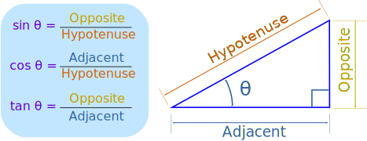

The triangle of most interest is the right-angled triangle. The right angle is shown by the little box in the corner:
The main functions in trigonometry are Sine, Cosine and Tangent
They are simply one side of a right-angled triangle divided by another.
